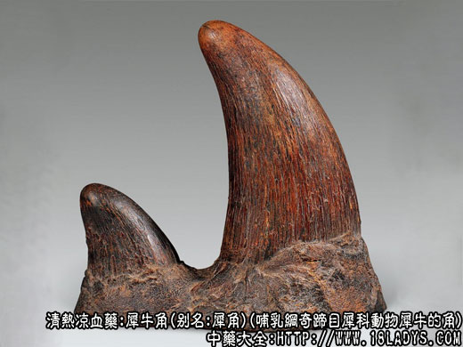

本品为常用中药，《神农本草经》列为中品。市售商品有两类。一类为亚洲犀牛角（暹罗角）；一类为非常犀牛角（广角）。
别名：犀牛角：暹罗角(暹罗，泰国的曾用名)。广角：天马角（上海市），兜角，柱角。
来源：为哺乳纲，奇蹄目，犀科动物，亚洲地区的印度犀或爪哇犀和苏门答腊犀，广角的原动物为非洲产的黑犀和白犀，头上鼻端及额上所生的角。大部野生于温热地带的沼泽森林地区，少数公园有饲养。
1、犀牛角：主产于印度、泰国、印尼、缅甸、马拉西亚、尼泊尔等国。
2、广角：主产于非洲东部和东南部各国，乌干达多产白犀。
概述：
1、印度犀：属于独角犀，分布于尼泊尔及印度北部。雌雄犀牛均生一角，角生于鼻端。
2、爪哇犀：属于独角犀，分布于印尼爪哇。但只雄性犀牛生有一角于鼻端，雌性无角。
3、苏门犀：属于双角犀，分布于印尼、泰国、缅甸。雌雄细均生两角，一前一后纵列而生，前角生于鼻端较大，后角生于额顶较小，雄犀的角较雌犀的角粗壮。
4、黑犀：属于双角犀，分布于非洲哦东南部各国。雌雄均生两角，生长部位与苏门犀相同。
5、白犀：亦属于双角犀，分布于乌干达余于黑犀相同。
性状鉴别：犀牛角（苏门犀，雄性犀中有代表性的角），呈圆锥形，底粗上细，立放如陡立的山峰，上端稍向后弯，乌黑色。大小不一，大者高达22厘米，底盘长圆形，前端稍窄，后部略宽，长径约20厘米，横径约14厘米，形如龟背，俗称“龟背盘”。放于平面上能坐平放稳。底盘外围有高约3厘米凸凹不平形如马牙的环边，俗称“马牙边”。马牙边上常常有未去净的稀疏硬鬃毛，俗称“钢毛”。中部以上角面光滑，角渐细，顶端钝圆有光泽，并有较明显的密集圆鬃点，俗称“芝麻点”。角前方马牙边上有一纵长凹沟，长约9～15厘米，深宽约2～3厘米，俗称“天沟”。与天沟相对的底盘上有一隆起的凸岗，岗长6～7厘米，高宽约2～3厘米，俗称“地岗”。底盘内部内向凹陷，深约3～6厘米。形如漏斗，俗称“窝子”。窝子内布满细密凹坑，俗称“砂底”。窝子中间显黑灰色，外周米黄色。角质坚硬。可纵向劈开，劈时脆而易裂，纵裂面显纵顺丝纹，形如集束粘合的猪鬃或黄花油松木之纵裂。纹理粗而清晰，无裂丝牵连。其镑片菲薄如纸，弯曲皱缩，呈灰白色并夹有暗棕色笑点及短线纹。揉搓时易破碎。横切片在显微镜下观察，可见每一鬃丝状单体中心有一略圆小孔洞周围有数圈由点线组成的小同心环，环心周围密集多数微小星点，形成不规则的三角或方圆形图案，单体之间点线稀疏，形成不规则的条格，使每一单体清晰的区分开来。因犀牛角质脆切片后上面常带有崩裂缝隙。气微香而不腥，味淡微咸。
老药工经过多年实践经验，将识别犀牛角的要点，总结成四句简练的顺口溜如下：
天沟、地岗、马牙边。钢毛、窝边、龟背盘。
沙底、粗丝、芝麻点。纵劈、脆裂、无牵连。
苏门犀雌性犀牛角：大盘细尖，底盘龟背形，有马牙边，天沟地岗不明显。
爪哇犀：犀牛角形态与苏门犀雄性角略同，唯色多为乌黑色。
印度犀：犀牛角一般较细长，不具备天沟地岗马牙边的特点。内色中心灰黑色，外围淡黄白色。
另外还有小犀牛角：又名蘑菇头、上海名滑角。形似小馒头。高3～13厘米，底盘圆形，直径3～9厘米，淡黄棕色经过涂漆的乌黑色，有光亮。下半部显粗糙多纵裂纹。其窝子较浅，沙底凹坑较细。纵裂面粗丝顺纹，无裂丝牵连。
此外还有用犀牛角雕成的器皿，如犀牛角环，图章等。犀牛角环又有光杯，花杯之分，大小不一。大者重达400克左右。形态各异。颜色多为黄棕色，亦可作犀牛角使用。
综上所述，犀牛角因犀牛种类不同，又因野生捕猎无定期，犀牛角老幼角形有变等原因，故角形不一，大小不等，不能完全具备上述代表性犀牛角的特点。其主要共同特点为横断面鬃眼大面明显，劈裂时，脆而无裂丝牵连、纵裂面纵丝顺直，粗如猪鬃。气微香，味淡。
犀牛角以枝达粗壮者为好。大底盘，细短尖者稍次。小犀牛角，犀牛角杯较差。
广角：过去多经广东进口，故名广角。商品中有广角个和广角瓣之分。又因角瓣颜色不同，分为白边角（白犀的角），黑边角（黑犀的角）。黑白两色因地区用药习惯不同，好次说法不一。均同等药用。
广角个：呈圆锥形，大小不等，最大者高达160厘米，小者15厘米左右。体重由数百克至10余公斤。底盘圆形，两侧边缘稍凸，前后边缘微凹，因而一般多不能放平坐稳。直径约10～20厘米。底部四周无马牙边，略光洁有纵裂纹或带有未去净的短毛刺。底盘内部稍向内凹陷，窝子较浅，有细密的凹坑并未去净的内皮层，中心黑灰色，周边黄白色，角质坚重。亦可纵向劈裂，但有韧性。纵裂面显纵顺丝纹，形如集束粘合的马尾或杨柳木之纵裂，纹理较细，劈时常有裂丝牵连或撕裂的毛刺翅起。其镑片并菲薄如纸，稍弯曲，白色或灰棕色，显短线纹，揉搓时韧性，不易碎断，横切片在显微镜下观察可见每一鬃丝状单体呈不规则的圆形，由多数同心环所组成，形如斗状指纹。单位之间星点密集形成不规则的网状格。使每一单体清晰的区分开来。广角质韧切片后上面很少有崩裂现象。气微腥，味淡微咸。
广角瓣：是广角个的加工品，主要是为了适应某些地区喜销白色广角或小块广角的习惯，将广角个锯成瓣块，显露出内在的白色部位，以利选择。本品多采用白犀额上生长的第二支角锯成，第二支角较第一支角短小，直立而不弯曲，尖端稍扁，外壁多不涂黑漆。呈灰褐色锯断面光滑平坦，丝纹细腻，中间多黑灰色，外围青白色或黄白色，有时淡粉红色，呈半透明状。根据内在黑白部位比重的大小，区分为黑边角或白边角。余与广角个相同。
广角按古代说法是：鹿取茸，犀取尖。以黑尖为好。北方有些地区仍取此说，南方各地则喜稍白边角。总之，黑白两色不能区分品质优劣，一般多以外形光洁，砂底无肉者为好。
主要成分：含碳酸钙、磷酸钙等。有效成分为犀氨酸；尚有多肽化合物及强心成分。
药理作用：
1、强心。动物实验证明对衰弱的心脏有明显的强心作用；
2、扩张血管。使血管先短暂收缩然后显著扩张；
3、升压。用药后血压先上升而后下降，然后持续上升；
4、降白细胞。犀牛角煎剂能降低家兔末梢血液的白细胞数；
5、解热。一般印象认为犀牛角有解热作用，但实验方面尚未证实；
6、镇静。作用明显。
炮制：磨粉，生用（过去镑片作饮片用）。
性味：苦、酸、咸、寒。
归经：入心、肝、胃经。
功能：清热、凉血、解毒、定惊。
主治：温病高热、神昏谵语，发斑，发黄，吐衄下血，小儿惊风等症。
临床应用：用于清热泻火，定惊止血。
1、用于热性传染病极期的高热、出血等情况。如属乙型脑炎、流行性脑膜炎等引起的高热不退、神昏谵语、夜睡不安，或有抽搐、斑疹，属邪入营分，配石膏、寒水石等，方如紫雪丹。如为邪入血分，出现斑疹，出血等症候，配生地、丹皮，方如犀牛角地黄汤。
2、用于治疗出血疾病，如血小板减少性紫癜，有鼻衄、牙龈出血，吐血或便血等情况时，也用犀牛角地黄汤。
用量：1.5～9g，宜剉末和药冲服，或磨汁冲服。
处方举例：犀牛角地黄汤（《千金方》）：犀牛角3g（剉末冲服），（或水牛角30g代），生地30g，丹皮9g，赤芍9g，水煎服。
注：1、习惯认为广角功效不及犀牛角。
3、犀牛角的生成与一般牛羊角不同，不是附骨而生，中心无骨塞，如鬃如发，生于皮肤之上。由表皮角化而来，是由簇长形鬃毛状表皮性乳突愈和而成。
4、犀牛角为稀有的珍贵药材，产于国外，由于世界上人口不断的增加，自然环境的改变，亚洲犀牛的繁殖受到一定的限制，和近200年来不断猎取，犀牛已成为世界上稀有动物，因货源奇缺，价格昂贵。解放后，中药的使用量不断增加，犀牛角在配制抗高热药的儿科药中，用量也越来越多。因受客观条件的限制，不能满足制药的需要，虽有广角补充，但非洲犀也同样也日渐减少，货源也愈来愈少，这种形势早已引起医药卫生主管单位以及广大医药工作者的注意，对国产的水牛角进行了长期研究和广泛的临床试用，已取得较好的效果。疗效似与犀牛角相似，现仍在研究使用过程中。
水牛角
为牛科动物水牛的双角，火牛在我国江南各省广泛饲养，为耕种水田的主要牲畜，角生于颅顶两侧，附骨而生，角向后弯曲，基部横径约10厘米，角长30余厘米，多数乌黑色，少数黄白色角质坚硬，不易劈裂，裂面丝纹很细，显绢丝样光泽。角壳迭套生成，断面中心显环纹。镑片则显云形花纹。
炮制：与犀牛角同。
性味：苦、寒，无毒。
主治：时气寒热头痛，热毒蜂及壮热。
附：由于犀牛角价值昂贵，药源困难，现已少用，一般用牛角（水牛角或黄牛角均可）代替。据动物实验，牛角的药理作用于犀牛角类似。牛角的提取物能降低末梢血液白细胞总数，促使淋巴组织增生；牛角煎剂和牛角提取物对离体动物的心脏有增强作用，临床应用牛角代替犀牛角治疗温热病，效果也较好，但用量要大，应为犀牛角的八倍至十倍，内服量需30～120g，剉碎先煎。